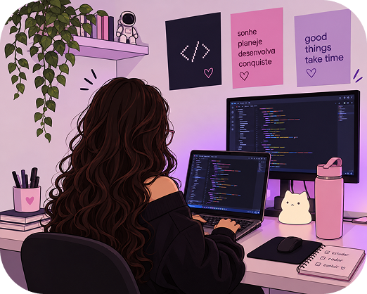
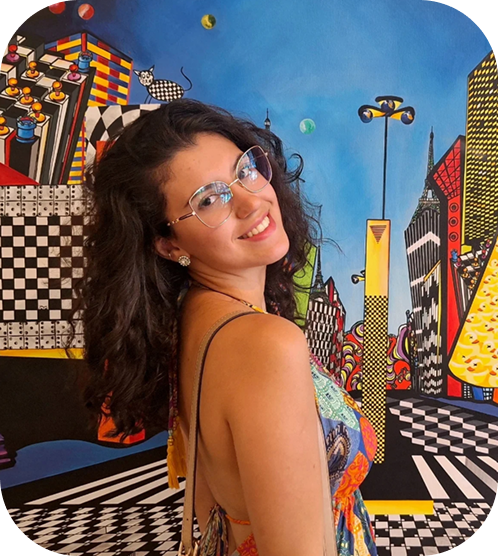
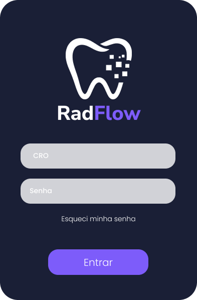
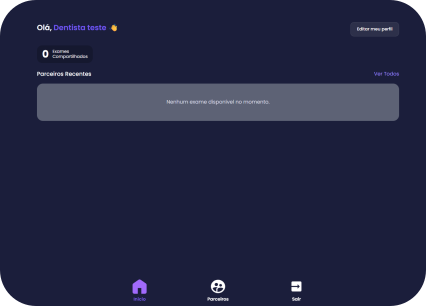
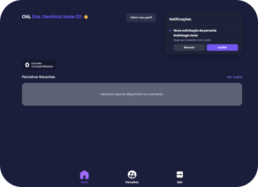
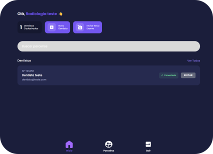
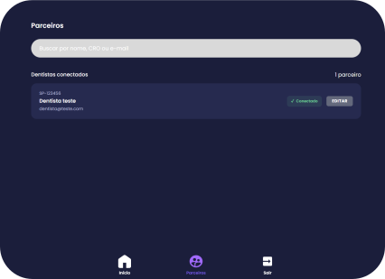

UI/UX Design
Criação de interfaces, organização de informações, protótipos e fluxos de navegação no Figma.
Figma · PHP · HTML · CSS · Java
Estudante de ADS · UX/UI e produto digital

Criação de interfaces, organização de informações, protótipos e fluxos de navegação no Figma.
Construção de páginas e interfaces web, considerando estrutura, responsividade e funcionalidades.
Análise de processos, identificação de necessidades e planejamento de soluções digitais.
Estudo Análise e Desenvolvimento de Sistemas e tenho um interesse especial por entender como as coisas funcionam (às vezes até mais do que deveria).
Gosto de observar esses cenários antes de pensar em uma solução.
Tenho explorado esse caminho entre análise, design e desenvolvimento, criando interfaces no Figma e desenvolvendo projetos com tecnologias como PHP, HTML, CSS e Java.

A distribuição de exames e laudos por diferentes canais dificulta a localização dos arquivos, o acompanhamento da disponibilidade dos resultados e a comunicação entre clínicas e dentistas, tornando o processo menos organizado.
Atualmente, a comunicação entre clínicas de radiologia odontológica e cirurgiões-dentistas acontece por diferentes canais, como WhatsApp, e-mail, links externos e mídias físicas. Essa variedade dificulta a organização e o acompanhamento dos exames.
A clínica de radiologia disponibiliza o exame e, quando o laudo estiver finalizado, realiza seu envio pela plataforma. O dentista recebe uma notificação e pode acessar os arquivos disponíveis em sua conta. A comunicação acontece por meio de uma conexão estabelecida entre a clínica e o profissional.
Desenvolver o RadFlow, uma plataforma que centraliza a comunicação e o acesso aos exames odontológicos, permitindo que clínicas de radiologia e dentistas acompanhem o envio dos arquivos, a disponibilidade dos laudos e as notificações em um único ambiente.
Disponibiliza o exame na plataforma.
Quando finalizado, o laudo é disponibilizado junto aos arquivos do exame.
O dentista recebe um aviso sobre a atualização.
Consulta e acessa os arquivos disponíveis em sua conta.




